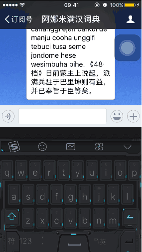

声明
阿娜米电子词典是满语文学习的利器，经过多民族热心网友多年的共同努力现已包含多个词库，并且还在不断增加完善中。您的支持就是我们坚持的动力，再次感谢各族满语文爱好者使用阿娜米电子词典。
关于词典的转写方案：阿娜米电子词典的转写方案使用的是穆林德夫转写方案，为了便于使用者输入，其中字母ū在该词典中用v，š用x表示。原词典中的个别例句与原著不一致的，我们以原著为准。该词典陆续会继续增加其他字典中的词条，敬请关注。
由于录入及校对工作量很大，所以错误在所难免，如您在使用中发现错误请及时反馈给我们，谢谢!
| 佟靖 (锡伯族) |
王灿 (汉族) |
jakxan （满族） |
阿永捷 （满族） |
| jalari （满族） |
kina （满族） |
嘎拉哈 （满族） |
张亮 （满族） |
| fiyangtahvn （满族） |
广略贝勒 （汉族） |
akdun （满族） |
冰冰凉 （满族） |
| surehan （满族） |
brotlein （满族） |
polyhedron （满族） |
muke （满族） |
| injahan （满族） |
sada （满族） |
minggantu (满族) |
| erimbu （满族） |
injahan （满族） |
akdun （满族） |
jalari （满族） |
| injexengge （满族） |
kina （满族） |
kacilan （满族） |
sada （满族） |
扫码关注阿娜米词典
首先输入要查找的满文词汇,词汇要使用拉丁字母转写，然后再输入要查询的词汇序号,例如1, 2, 3等.具体操作方式如下图所示：

技术支持：durgiya